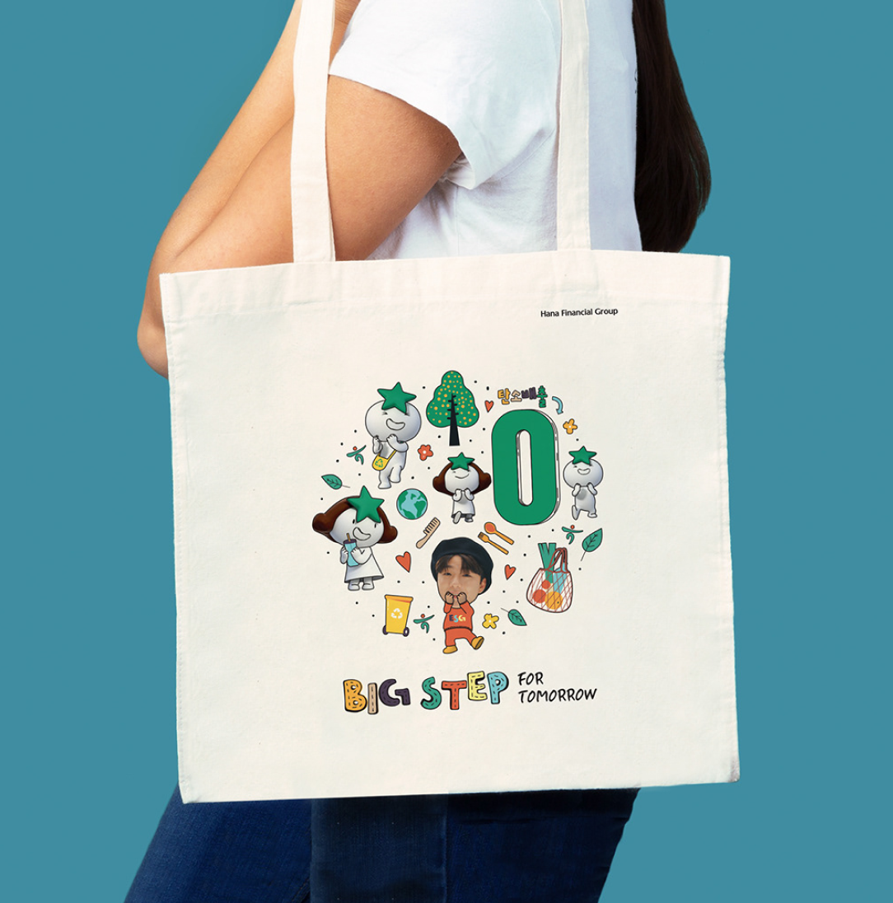

하나은행
/
애쓰지(ESG) 댄스 챌린지 우수 콘텐츠 상품_래퍼 래원 한정판 에코백
/
2021
하나 애쓰지(ESG) 에코백

이화여자대학교 일반대학원 졸업작품
/
6분 44초
/
2014
Social ground
2016 서울국제초단편영화제 본선진출 상영작
2017 International Film Festival Zoom - Zblizenia, Poland 본선진출 상영작
이화여자대학교 일반대학원 졸업작품
/
1200*1200mm
/
2013